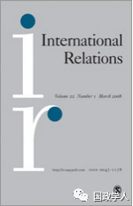

收录于合集

简 介
【作者】 理查德·勒博(Richard N Lebow)，现任英国伦敦国王学院战争研究系国际政治理论教授，剑桥大学彭布罗克学院研究员，美国达特茅斯学院政府系詹姆斯·弗里德曼首席教授（荣誉退休）；默文·弗罗斯特(Mervyn Frost)曾在牛津大学学习政治学，曾担任国际研究协会(ISA)执行委员会成员。
**【 编译】**袁浩延
【校对】 周雨橙、李玉婷、高嘉琳
【来源】 International Relations, 2019, Volume.33, pages. 3-22
** 【 期刊 】** International Relations, 创刊于1960年，目前由SAGE出版社和戴维·戴维斯纪念研究所出版。该期刊每季度出版一次。其影响因子为1.191 (2014).

国际关系中的修辞陷阱
Ethical traps in international relations
内容提要
本文阐述了在国内和国际政治中均较弱的行为体普遍使用的一种不太引人注意的战略： 道德陷阱 （ Ethical traps ） 。 落入这种陷阱的行为体会在国内外失去道德地位和影响力。 作者探讨了陷阱的概念，并将其与未经其他行为体蓄意引诱的政策干预和升级区分开来。作者记录了国内与国际上的成功的道德陷阱的历史实例，也讨论了未成功的陷阱。 本文认为，道德陷阱已成为当代国内或国际不对称冲突中一个日益突出的特征。 最后，本文就设置道德陷阱的全球实践及其可能成功的条件提出了一些建议，并对自由和非自由制度在这些陷阱面前的相对脆弱性提出了一些看法。这反过来说明了，在国际事务中违反道德的实际后果具有重要意义。
文章导读
**在主权国家的全球实践中，参与国容易受到道德陷阱的影响。这些 陷阱可能是其他国家蓄意设置的，也可能在国家间互动的意外事件中出现。**在陷入道德陷阱之后，国家变得对其他国家的批评持开放态度，这些批评可能导致合法性、影响力和权力的丧失。蓄意的道德陷阱是一个国家行为体或非国家行为体企图诱使另一个国家采取行动，而后者的行动将与全球实践的一个或多个基本准则相抵触。 **在各国的全球实践中，道德陷阱是政治冲突中弱势行为 体普遍采取的一种策略。它是用来应对那些声称在全球实践中占据道德高地的行为体的最有效的可能方式。**通过他们自身行为方式与其标榜的核心道德价值观之间的矛盾，来暴露这些行为体的本色。
道德陷阱是不对称冲突的一个突出组成部分，但这一点在以往文献中并未得到充分的说明。作者探讨了设置道德陷阱的行为以及道德陷阱被利用的全球实践，将道德陷阱与其他类型的陷阱以及外交政策干预和升级区别开来。道德陷阱有时是自我施加的。国家行为可能因此受限，适得其反落入道德陷阱，而后被其他国家利用。 本文 把重点放在蓄意设置的陷阱上。
**作者 讨论了一些道德陷阱的例子，重点放在北爱尔兰、加沙和孟买。**本文记录了四个成功的道德陷阱的例子：北美殖民地，西班牙，北爱尔兰，最近发生的在加沙。其中深入探讨了两个未成功的道德陷阱案例：2008年孟买发生的恐怖袭击，以及伊斯兰国(ISIS)企图利用斩首和其他暴行引诱美国和其他西方大国向叙利亚冲突派遣地面部队的努力。最后，作者提出了关于何时可能设置道德陷阱、这些陷阱可能成功的条件以及行为者如何防范这些陷阱的建议。道德陷阱在未来更有可能发生，因为相比以往，战后国际准则的演变使各国对更高的行为标准负责。媒体的传播也为记录和宣传违背道德的行为提供了便利。
**1
**
什么是陷阱？
历史上的军事陷阱给受困者造成了灾难性的后果，因为它们不仅导致了人力和设备的损失，还可能导致意愿的丧失。两者都导致了影响力的削弱，特别是以军事力量的威胁或运用为基础的影响力。道德陷阱造成影响力的损失，但没有人力和物资的介入损失。外国或国内受众倾向于疏远这样的国家和领导人：其政策违反了被国内和国际所广泛接受的道德原则与准则。
**2
**
道德陷阱的动态
道德陷阱在现代更为常见，因为主权国家的全球实践体现了国际公认的准则，即某些行为是不可接受的。 现代的交流方式使蔑视可以通过视频和口头的方式即时传播。
**在现代，民族主义运动设置了陷阱，以扩大其支持基础， 剥夺中央当局的合法性。**1773年12月的波士顿倾茶事件就是一个早期的例子。该事件严重激怒了北美殖民者，也成为第一次大陆会议的动力，为两年后的美国革命奠定了基础。
行动从被执行的实践中获得意义，政治的许多方面包括如何恰当地解释他人的行动、其背后的动机、其后果以及它们在多大程度上符合或违反了国际惯例的基本准则。 **争议 双方往往都试图抹黑竞争对手的解释，称其仅仅是“编造的”。在道德陷阱的情况下，这是至关重要的。陷阱设置者试图以最大的恶意描绘他们的敌人，而落入陷阱的人则试图以某种方式证明他们的行为是正当的。**最近的一个例子是2014年以色列和哈马斯在加沙的对抗。不可否认，这是哈马斯设下的道德陷阱。他们对以色列发动导弹袭击，希望挑起报复空袭，杀死平民，并和亲哈马斯的媒体一道以恶意来描述以色列。以色列发动了预期的空袭，并对加沙进行了有限的占领。哈马斯向世界宣布，以色列正在轰炸学校和医院，杀害无辜平民。以色列答复说，以色列是在自卫报复哈马斯的火箭弹袭击，其中一些火箭弹发射器是被故意放在学校和医院里的。
**道德陷阱是不可避免的，它们往往会随着时间的推移而展开。一旦行为 体做出承诺，当领导人意识到道德陷阱的代价越来越高昂时，他们却发现难以(如果不是不可能的话)从中抽离。**外国或国内的反对者不断声称道德高地，以此减损行为者的利益，并希望通过这种方式来获得地位和影响。2014年加沙战争由一系列的局势升级组成（编者按：指诱捕者与被诱捕者的互动），拿破仑对西班牙的干预、英国试图维持13个殖民地的秩序，以及英国对北爱尔兰的干预同样如此。
一项好的政策要求对可能的军事行动所产生的消极后果保持敏感，而不仅仅是对预期的好处保持敏感。在这方面，必须区分行为者无意中为自己设置的陷阱和对手为他们设置的陷阱。在接下来的案例研究中，作者描述了他人诱捕发生的背景、其发展和利用的动态以及最有可能发生的情况。作者在两个基本成功的道德陷阱的案例研究中发展了论点：1969-1972年英国在北爱尔兰的政策和2014年以色列和哈马斯之间的冲突。他们还分析了两个没有成功的陷阱：2008年孟买发生的恐怖袭击，以及2014年ISIS通过广为人知的处决手段煽动西方干预的行为。
3 结 论
作者 所研究的几个冲突揭示了一国考虑不周的各种行动间的相互作用，这些行动为其他国家尝试诱捕创造了条件和动机。美国的案例说明了这一点。1770年3月所谓的波士顿大屠杀是英国军队和北美殖民者计划外的局势升级。马萨诸塞州的煽动者在煽动独立方面没有取得重大进展。1770年3月，他们骚扰了一名哨兵，使8名英国士兵前来营救这名哨兵，煽动者们反过来受到辱骂和虐待。这些士兵未经授权向威胁人群开枪，造成死伤。当代理总督答应进行调查时，人群散去。在随后的审判中，这些士兵被无罪释放。这一事件即波士顿大屠杀。
波士顿大屠杀是茶党故意挑起的。当地的英国士兵在第一次事件中未经授权的过度反应，使美国激进分子意识到，这种反应对他们的事业大有好处。波士顿茶党在这方面取得了成功。随后，英国在政治和军事上的强硬手段，激进分子获得更多支持，革命成为可能。
**毫无疑问，自由国家更容易受到道德陷阱的影响，因为它们在坚持道德实践的基础上 取得自身的地位和影响力。**在这些国家，还可能会有更多的公民因为政府违法行为转而对本国政府表示反对。
然而，非民主国家也容易受到道德陷阱的影响。这是因为它只在一定程度上取决于 “好的”行为者的道德敏感性，也同样取决于在全球国家实践中对所有参与者的道德约束。
**那么， 行为体应怎样避免道德陷阱呢？它们应注意全球实践中的其他行为体对其行为的道德期望，更应注意它们对其国内秩序和外交政策所依据的价值观所表明的态度。**全球政治中的许多行为体都未能做到这一点。这种失败是由对伦理、政治和国际关系以及它们之间的关系的错误理解所造成的。许多现实主义者都有一句著名的论断，即道德止于国内，而外交政策若要有效，就必须不受道德约束。与此形成对照的是，古典现实主义者认为，外交政策在符合一般可接受的道德原则时最为成功。古典现实主义者和其他认为外交政策应遵循道德规范的人认为，政策选择应符合一些最低限度的道德标准。
**在外交政策中，道德 远非一种奢侈。这是因为国际行为体是一个具有内在规范的全球社会参与者。**国际行为体的影响和权力不仅取决于他们的军事和经济力量，而且取决于他们所寻求的目标的合法性以及他们为实现这些目的所使用的手段。与现有道德规范不一致的目标和做法引起了反对，损害了行为体在他人眼中的地位，并降低了其举措的可能效力。在当今世界，未经国际社会授权而拔剑的国家失去了立场的正当性，因而失去了影响力，就像美国在入侵阿富汗和伊拉克之后所做的那样。自伊拉克战争以来，美国的国际形象实际上已经从一个维持现状的大国转变为一个修正主义大国。
自启蒙时代以来，许多人已经开始相信，道德是一个纯粹的主观问题，个人只是选择以同样的方式来选择坚持某些价值观。这一观点是有缺陷的，因为在包含了道德成分的社会实践中，人们按照自己的身份得到建构。这意味着人们不能违反这些根深蒂固的道德约束而不受惩罚。他们是社会成员，在家庭、工作场所和整个社会中应按照一套既定的价值观行事。不遵守这些价值观及其相关做法，将会招致耻辱和可能的惩罚。这对于国家来说同样如此。它们植根于区域和全球社会，受一系列复杂的道德安排和期望制约。
与保密和安全外包相比，避免道德陷阱更明智的策略是避免引发道德陷阱的行为。这就需要宝贵的道德能力、政治敏感性和政治克制。正如以色列在加沙问题上的两难处境：一旦哈马斯开始将导弹瞄准以色列定居点，政府就面临着“霍布森选择”，即若不进行军事干预，将冒着在国内政治上失败的风险。然而，干预将不可避免地落入哈马斯的陷阱。
一旦陷入道德陷阱，不采取行动的选择是不可接受的。 本文再次强调 道德陷阱可以是弱者用来对付强者的一种手段。
_ ** _ 本文由国政学人微信平台独家编译首发**
_ ** _ 官网链接：** https://journals.sagepub.com/doi/full/10.1177/0047117818808568
更多阅读
【重磅速递】约瑟夫·奈：美国霸权的兴衰：从威尔逊到特朗普 | 国政学人
【重磅推荐】巴里·布赞：英国学派视角下的中国崛起 | 国政学人
【重磅速递】米尔斯海默：注定失败：自由主义国际秩序的兴衰 | 国政学人
【美国研究】IS杂志：为何美国的外交大战略如此稳定？| 国政学人
【英国脱欧】以欧盟为核心的多中心外交：脱欧后英国的欧洲外交战略 | 国政学人
【民族主义】江忆恩：中国的民族主义正在高涨吗？基于对北京群众的调查 | 国政学人